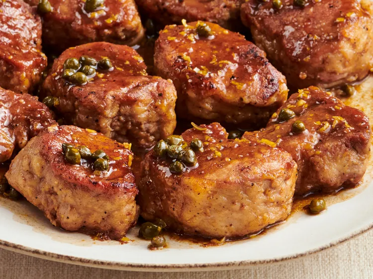

Home
Pork Medallions with Balsamic Vinegar and Capers

These pork tenderloin medallions come together in less than half an hour.
Some reviewers suggest doubling the balsamic sauce for extra flavor.
"This was delicious, family loved it!" writes Allrecipes member JennyM19.
Ingredients
- ¼ cup all-purpose flour
- 1 teaspoon garlic salt, or to taste
- ½ teaspoon freshly ground black pepper, or to taste
- 2 pounds pork tenderloin, cut into 1 1/2 inch pieces
- 2 tablespoons olive oil
- ⅓ cup balsamic vinegar
- ½ cup chicken broth
- 2 teaspoons minced lemon zest, or to taste
- 1 tablespoon capers, or to taste
Steps
-
Place the flour, garlic salt, and pepper into a plastic bag. Shake to mix, the add the pork tenderloin
pieces, and shake again to coat. Shake off the excess flour.
-
Heat the oil in a large skillet over medium-high heat. Cook the pork medallions in the hot oil until
golden-brown on both sides, 2 to 3 minutes per side. Pour in the balsamic vinegar and chicken broth.